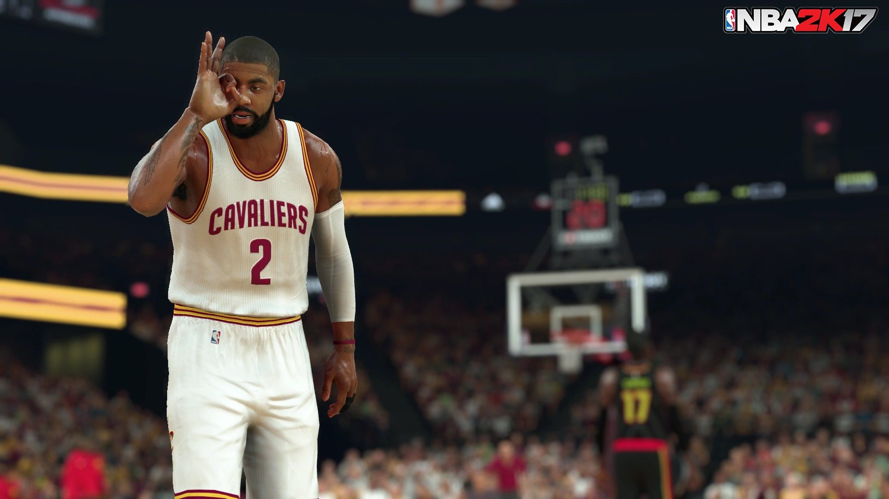

Nueva edicion de 2k.Volvemos a encontrarnos con unas sensaciones geniales en la cancha, con un ritmo de juego realista y un comportamiento fantástico de la pelota tanto en las manos de nuestros jugadores como cuando realizamos pases, amagos, o rebota contra el tablero o el aro de una forma muy fiel a la realidad.
Una novedad que nos ha gustado mucho es la relativa al gasto de energía de los jugadores.
Ahora, hay unos indicadores muy claros para saber el esfuerzo que conlleva cada acción, en especial los sprints, y así saber cuánto aliento tiene cada jugador en cada momento,
lo cual afecta a su manejo del balón o a su porcentaje de acierto.
En relación con eso, si vamos a lo loco y el jugador está agotado, será muy fácil que se le escurra el balón ante cualquier rival que le salga al paso.
Gracias a la barra que aparece, vemos también a qué ritmo se recupera el jugador cuando deja de hacer un esfuerzo intenso.
Otro aspecto que nos ha encantado es el de los nuevos movimientos sin balón, como las fintas.
Disponible para
La revolución. Uno de los primeros cambios de los que nos hemos dado cuenta a nivel jugable es que en esta entrega es más fácil que el jugador pise fuera de la cancha dando la posesión al rival, eliminando buena parte de ese gran "muro" que nos encontrábamos en ediciones anteriores y que hacía que pudiéramos correr pegados a la línea lateral o a la línea de fondo sin apenas consecuencias y obligándonos, en esta ocasión, a pasar más la bola si estamos pegados a ellas.